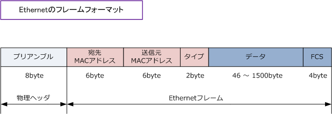
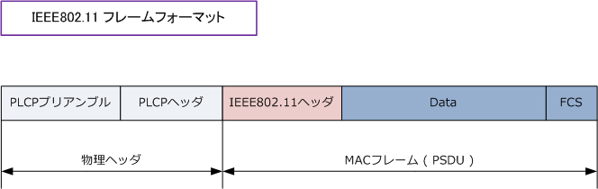
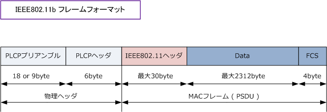
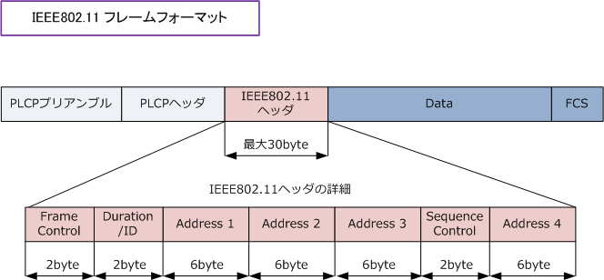
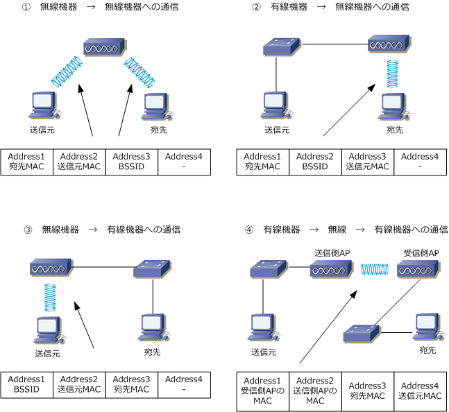

Wireless LAN - IEEE802.11 Frame Format
IEEE802.11フレームフォーマット - 概要
先ず、Ethernetフレーム（DIX規格）のフォーマットを見てみます。Ethernetフレームの先頭に付加される 「プリアンブル」とはEthernetの送受信においてフレームの始まりを合図するための特別なビット列であり プリアンブルはフレーム長として含めずに考えるのでEthernetフレームサイズは 64～1518byteとなります。

次に、無線LANフレームのフォーマットを見ます。IEEE802.11フレームの場合、IEEE802.11 a/b/g の いずれにおいてもPLCPプリアンブル、PLCPヘッダ、PSDUの3つで構成されます。詳細は以下の通りです。

| IEEE802.11フレーム - 3つの構成要素 | |
|---|---|
| PLCPプリアンブル | IEEE802.11フレームの先頭に付加される同期信号のビット列。この情報は物理層で付加される。 |
| PLCPヘッダ | 変調方式(伝送速度)、データ長などの情報があるヘッダ。この情報は物理層で付加される。 |
| PSDU | IEEE802.11ヘッダと実際のデータから構成される情報。この情報はデータリンク層で付加される。 |
IEEE802.11フレームフォーマット - 物理ヘッダの例 - 802.11b
物理ヘッダを、例えばIEEE802.11bのものとしたWLANのフレームフォーマットを詳細に見ていきます。

802.11bの場合、PLCPプリアンブルにはロングプリアンブル(18byte)とショートプリアンブル(9byte)の 2種類があります。ロングプリアンブルの場合は、物理ヘッダ(PLCPプリアンブル ・ PLCPヘッダ)は常に 1Mbpsで伝送されます。ショートプリアンブルでは物理ヘッダ(PLCPプリアンブル ・ PLCPヘッダ)は常に 2Mbpsで伝送されます。無線LANの伝送速度がどのような値でも、物理ヘッダはこの速度で伝送されます。
| IEEE802.11bにおける2種類のプリアンブル | ||
|---|---|---|
| ロングプリアンブル | 18 byte ( 144bit ) | 11bでは、PLCPプリアンブル、PLCPヘッダは常に1Mbpsで伝送される。 |
| ショートプリアンブル | 9 byte ( 72bit ) | 11bでは、PLCPプリアンブル、PLCPヘッダは常に2Mbpsで伝送される。 |
IEEE802.11では、送信側「例：WLAN端末」がどの値の伝送速度でデータが送られてきたのかを、受信側 「例：アクセスポイント」が知るための規定があり、伝送速度の情報があるPLCPヘッダ（物理ヘッダ）を 最も遅い伝送速度で送るようにしています。この規定により受信側は常に低速で物理ヘッダを受信します。 PLCPヘッダに書かれた伝送速度が分かれば、その伝送速度でMACフレームは受け取られるようになります。
IEEE802.11フレームフォーマット - IEEE802.11ヘッダ
次に、IEEE802.11フレームの中の「IEEE802.11ヘッダ」の詳細を見ていきます。Ethernetフレームでは 宛先アドレス、送信元アドレス、タイプの3項目だけでしたが無線LANでは7項目もフィールドがあります。

| IEEE802.11ヘッダ (MACヘッダ) のフィールド | |
|---|---|
| Frame Control | フレームの種類、フレームの宛先、送信元が無線か有線かどうか、フラグメント情報、電力管理、 WEPの使用の有無などの情報を含む。フレームの種類は次の通り。APが発信するビーコン等の 管理フレーム(00)、Ackフレームなどの制御フレーム(01)、データの送信を示すデータフレーム(10) |
| Duration/ID | RTS/CTSなどで使用するフィールド。電波を使用する予定期間(フレーム送信に必要な時間)の情報。 |
| Address 1 | 宛先のMACアドレス、送信元のMACアドレス、アクセスポイントのMACアドレス(BSSID)などの情報。 |
| Address 2 | 宛先のMACアドレス、送信元のMACアドレス、アクセスポイントのMACアドレス(BSSID)などの情報。 |
| Address 3 | 宛先のMACアドレス、送信元のMACアドレス、アクセスポイントのMACアドレス(BSSID)などの情報。 |
| Sequence Control | 送信するデータのシーケンス番号、またはフラグメント化した場合のフラグメント番号の情報 |
| Address 4 | 宛先のMACアドレス、送信元のMACアドレス、アクセスポイントのMACアドレス(BSSID) などの情報。 ※ ビーコンなどの管理フレームである場合、このフィールドに SSIDの情報 (実際の文字列) がある。 |
※ 制御フレーム(01)としてはRTS、CTS、Ack、PS-Pollの4種類のフォーマットがあります。管理フレーム（00）としては、例えば ビーコン、プローブリクエスト、プローブレスポンス、アソシエーションリクエスト、アソシエーションレスポンスなどがあります。
Address 1/2/3/4 のフィールドのアドレス情報については、以下の通りネットワーク構成により変化します。

?Aの場合、送信元のPCはEthernetフレームを送信してくるので、宛先アドレスと送信元アドレスの情報 しか指定していません。これをAPでヘッダーを書き換えて、上図のAddress 1/2/3 の情報に変更します。
?Bの場合、送信元のPCはIEEE802.11フレームを送信してきます。APはこのIEEE802.11フレームを宛先 と送信元アドレスの情報だけのEthernetフレームのフォーマットに変更して有線LANの宛先に転送します。
?Cの場合、送信元のPCはEthernetフレームを送信してくるのでこれを上図のようなIEEE802.11フレーム に変更して転送します。そのフレームを受信したAPはEthernetフレームのフォーマットに変更して有線へ。